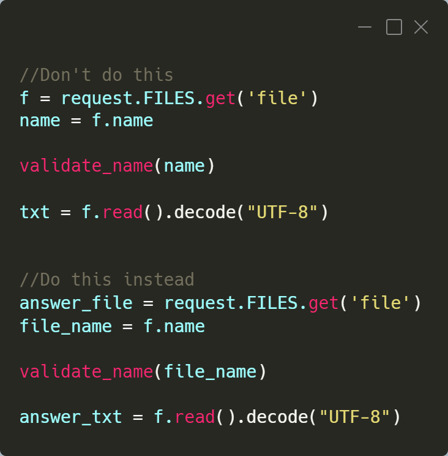
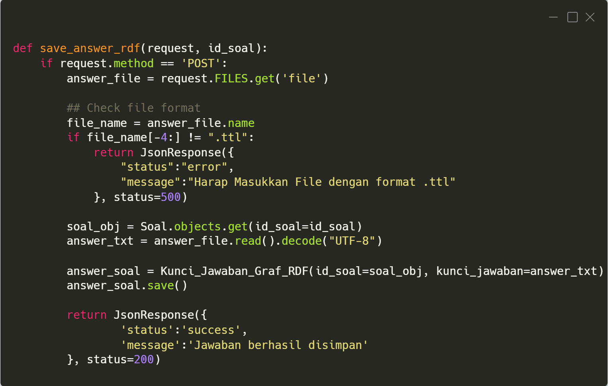
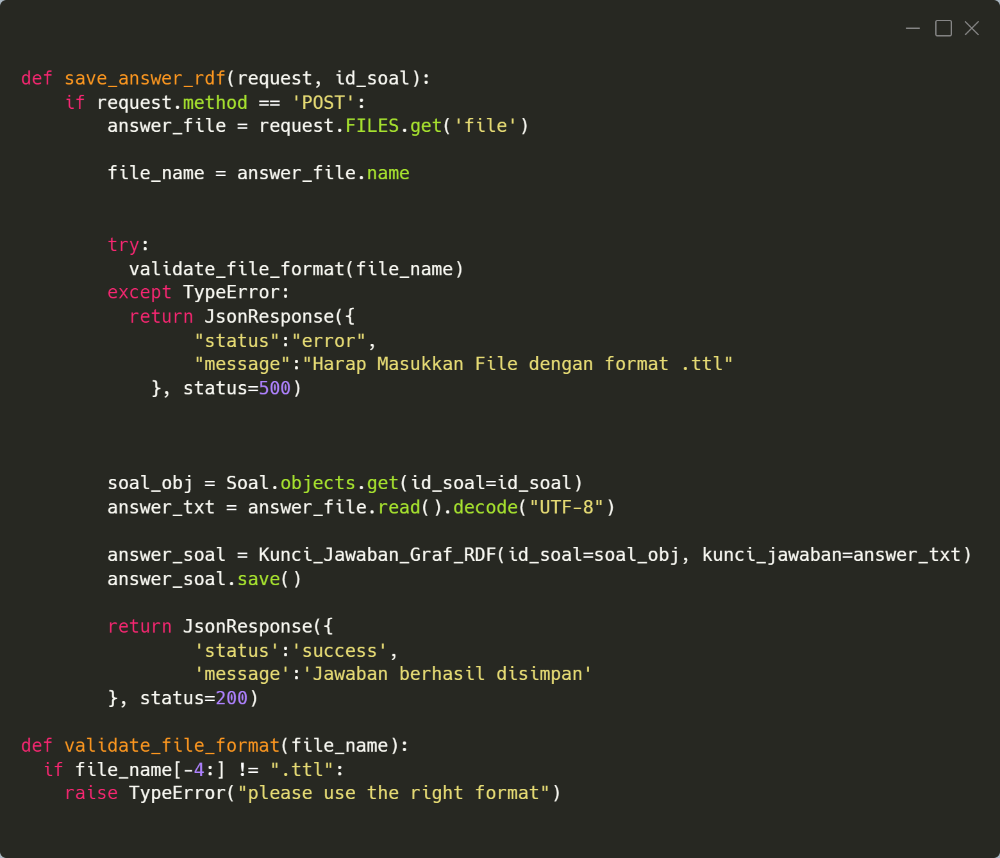

Best Practice in Programming
Kenapa kita perlu menerapkan best practice?
Sebagai seorang developer tentunya sudah menjadi tugas kita untuk dapat memenuhi ekspektasi maupun requirement yang diminta oleh client.
Namun terkadang developer sering dihadapi dengan deadline dan banyaknya workload sehingga pekerjaan dikerjakan dengan yang penting jadi.
Hal tersebut bisa menghasilkan code yang berantakan dan malah bisa menimbulkan masalah di kemudian hari.
Dengan menerapkan best practice pada programming kualitas kode tentunya dapat dijamin dan jika terdapat bugs dikemudian hari akan lebih mudah
untuk menanganinya. Kode yang dibuat berdasarkan best practice juga lebih mudah untuk dibaca dan dipahami oleh orang lain sehingga dapat
memudahkan developer berikutnya yang akan mengembangkan kode tersebut.
How to implement best practice
Kode yang baik harus dapat memenuhi kriteria berikut: Maintainability, scalability, readability, dan portability. Ada beberapa hal yang
dapat dilakukan untuk memastikan kode yang dihasilkan kualitasnya baik
- Penamaan Variable
- Comments
- Reusability
- Low coupling and high cohesion
- Testing
Penamaan Variable
Penamaan variable harus represntatif terhadap nilai yang dimilikinya sehingga ketika pertama kali dilihat dapat langsung diketahui kegunaan
variable tersebut. Hindari menggunakan singkatan-singkatan dan gunakan penamaan yang representatif sesuai dengan aturan penulisan Variable
pada bahasa pemrograman yang digunakan.

Comments
Comments bukan merupakan sesuatu yang fungsional namun dapat mempermudah developer dalam membaca dan memantain kode teresebut.
Tidak perlu memberikan komen pada sesuatu yang sudah obvious seperti menjelaskan variable ketika penamaan variable yang digunakan
sudah cukup representatif. Gunakan komen untuk menjelaskan baris kode/fungsi yang memang kompleks dan membutuhkan waktu untuk memahaminya jika
harus membaca keseluruhan kode. Dan pastikan komen tersebut memang membantu memahami kode dengan lebih cepat dan bukan menambah kompleksitas kode
Reusability
Don't Repeat yourself, kode dapat dibuat dalam bentuk fungsi ataupun dijadikan sebuah module agar dapat digunakan kembali
Low coupling and high cohesion
Low Coupling berarti memiliki sebuah kode atau fungsi memiliki ketergantungan yang rendah terhadap kode lain sementara high cohession
berarti sebuah fungsi atau modul hanya berisi hal-hal yang berhubungan dengan modul tersebut saja. Hal ini dapat dpenuhi jika kita menerapkan
Single responsibilty principle, yang mana suatu fungsi hanya memiliki satu tujuan saja. Dapat dilihat pada fungsi berikut.

Fungsi tersebut melakukan dua hal yaitu memvalidasi sekaligus menyimpan data yang diterima. Alangkah baiknya jika validasi dilakukan dalam
fungsi tersendiri agar menerapkan Single responsibilty principle.

Setelah dibuat fungsi validasi tersendiri sekarang fungsi save hanya melakukan saving answer dan untuk validasi diserahkan ke fungsi validate.
Dengan begitu sekarang fungsi save sudah menerapkan Single responsibilty principle.